<title>Posts Google Construisez</title>
<meta name="claude:viewport-fit-sides" content="cover">
<link rel="preconnect" href="https://fonts.googleapis.com">
<link rel="stylesheet" href="https://fonts.googleapis.com/css2?family=Bodoni+Moda:ital,opsz,wght@0,6..96,500;1,6..96,500&family=IBM+Plex+Mono:wght@500&family=Public+Sans:wght@400;600;700&display=swap">
<style>
/* Mise en page : une colonne de fiches datées, image à gauche et texte à copier à droite ; une seule ambiance sombre, celle de construisez.fr */
:root {
  --bg: #0b0c0f; --card: #13151b; --line: #242731; --fg: #fbfbfa; --dim: #9ca0ab;
  --acc: #3e6b5c; --acc-l: #7fb3a0;
  --display: 'Bodoni Moda', Didot, 'Times New Roman', serif;
  --body: 'Public Sans', system-ui, sans-serif;
  --mono: 'IBM Plex Mono', ui-monospace, monospace;
  color-scheme: dark;
}
body { background: var(--bg); color: var(--fg); font-family: var(--body); font-size: 16px; line-height: 1.5; }
.wrap { max-width: 1080px; margin: 0 auto; padding-block: 40px 80px; padding-left: max(16px, env(safe-area-inset-left, 0px)); padding-right: max(16px, env(safe-area-inset-right, 0px)); display: flex; flex-direction: column; gap: 28px; }
.eyebrow, .lab, .when, .done, figcaption, .city { font-family: var(--mono); letter-spacing: .14em; text-transform: uppercase; font-size: 12px; color: var(--dim); }
.eyebrow { color: var(--acc-l); }
h1 { font-family: var(--display); font-weight: 500; font-size: clamp(36px, 6vw, 60px); line-height: 1.05; text-wrap: balance; margin: 8px 0 0; }
h1 em { color: var(--acc-l); }
.intro { max-width: 65ch; color: #d5d9dd; margin: 0; }
.steps { display: grid; grid-template-columns: repeat(auto-fit, minmax(220px, 1fr)); gap: 12px; margin: 0; padding: 0; list-style: none; counter-reset: s; }
.steps li { counter-increment: s; background: var(--card); border: 1px solid var(--line); border-radius: 8px; padding: 16px 18px; color: #d5d9dd; min-width: 0; }
.steps li::before { content: counter(s); display: block; font-family: var(--mono); color: var(--acc-l); margin-bottom: 6px; }
.steps b { color: var(--fg); }
.progress { font-family: var(--mono); font-size: 13px; color: var(--acc-l); }
.post { border-top: 1px solid var(--line); padding-top: 24px; display: flex; flex-direction: column; gap: 10px; }
.post.is-done { opacity: .45; }
.post-head { display: flex; justify-content: space-between; align-items: center; gap: 12px; flex-wrap: wrap; }
.when { display: flex; gap: 12px; align-items: baseline; flex-wrap: wrap; color: var(--fg); }
.when .n { color: var(--acc-l); }
.when .time { color: var(--dim); }
.done { display: flex; align-items: center; gap: 8px; cursor: pointer; color: var(--fg); }
.done input { width: 18px; height: 18px; accent-color: var(--acc); }
h2 { font-family: var(--display); font-weight: 500; font-size: clamp(24px, 3.4vw, 32px); line-height: 1.15; margin: 0; text-wrap: balance; }
.city { margin: 0; text-transform: none; letter-spacing: .04em; }
.body { display: grid; grid-template-columns: minmax(0, 5fr) minmax(0, 6fr); gap: 24px; align-items: start; margin-top: 6px; }
figure { margin: 0; display: flex; flex-direction: column; gap: 8px; }
figure img { width: 100%; height: auto; border-radius: 8px; border: 1px solid var(--line); }
figcaption { text-transform: none; letter-spacing: .02em; font-size: 12px; }
.txt { display: flex; flex-direction: column; gap: 10px; min-width: 0; }
.label-row { display: flex; justify-content: space-between; align-items: center; gap: 12px; flex-wrap: wrap; }
.text { margin: 0; white-space: pre-wrap; font-family: var(--body); font-size: 15px; line-height: 1.55; background: var(--card); border: 1px solid var(--line); border-radius: 8px; padding: 16px 18px; color: #e4e7ea; }
.url { display: block; font-family: var(--mono); font-size: 12px; background: var(--card); border: 1px solid var(--line); border-radius: 8px; padding: 12px 14px; color: var(--dim); overflow-wrap: anywhere; }
.copy { font-family: var(--body); font-weight: 700; font-size: 14px; color: #fff; background: var(--acc); border: 0; border-radius: 6px; padding: 9px 14px; cursor: pointer; }
.open { align-self: flex-start; font-weight: 700; font-size: 14px; color: #fff; background: var(--acc); border-radius: 6px; padding: 9px 14px; text-decoration: none; }
.open:focus-visible { outline: 2px solid var(--acc-l); outline-offset: 2px; }
.copy:hover { filter: brightness(1.12); }
.copy:focus-visible, .done input:focus-visible { outline: 2px solid var(--acc-l); outline-offset: 2px; }
.copy.ok { background: var(--card); color: var(--acc-l); box-shadow: inset 0 0 0 1px var(--acc); }
@media (max-width: 720px) { .body { grid-template-columns: minmax(0, 1fr); } }
@media (prefers-reduced-motion: no-preference) { .post { transition: opacity .2s; } }
</style>

<main class="wrap">
  <header>
    <div class="eyebrow">Construisez · fiche Google</div>
    <h1>Vos posts Google, <em>prêts à publier</em></h1>
  </header>
  <p class="intro">Un post par date, le même jour que sur Instagram et Facebook. Comptez une minute par post. Cochez « Publié » une fois en ligne : la case reste cochée sur cet appareil.</p>
  <ol class="steps">
    <li>Sur votre téléphone, ouvrez <b>Google Maps</b> ou cherchez <b>« Construisez »</b> sur Google, puis touchez <b>Ajouter une actualité</b>.</li>
    <li>Touchez <b>Ouvrir l'image en grand</b>, enregistrez-la (appui long), puis choisissez-la dans vos photos.</li>
    <li>Collez le <b>texte</b> avec « Copier le texte ».</li>
    <li>Ajoutez un bouton <b>En savoir plus</b> et collez le lien, puis <b>Publiez</b>.</li>
  </ol>
  <p class="progress" id="progress"></p>
  
<article class="post" id="p2026-11-25-1230" data-id="2026-11-25-1230">
  <header class="post-head">
    <div class="when"><span class="n">01</span><span class="day">mercredi 25 novembre</span><span class="time">dès 12:30</span></div>
    <label class="done"><input type="checkbox" id="done-2026-11-25-1230"> Publié</label>
  </header>
  <h2>Expert : un dossier se vérifie avant le dépôt (ce qu&#x27;on oublie presque toujours)</h2>
  <p class="city">📍 Saint-Maur-des-Fossés (94)</p>
  <div class="body">
    <figure>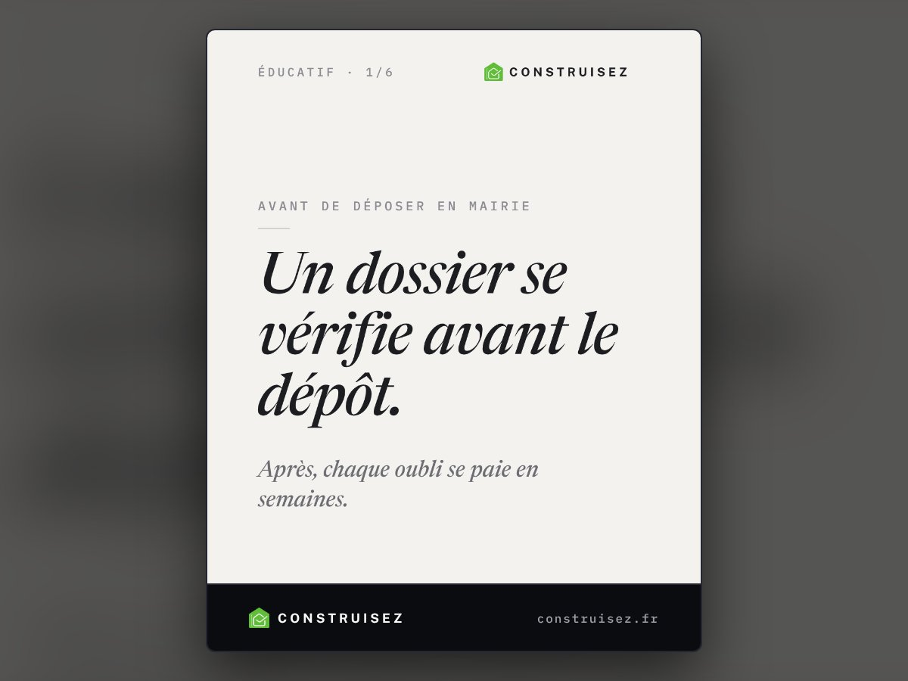<a class="open" href="https://raw.githubusercontent.com/antunesncls-sys/atelier-baratte-GIT/claude/beautiful-ritchie-9o5e4z/zernio/google-manuel/images/2026-11-25-google-editorial-avant-depot-e1.jpg" target="_blank" rel="noopener">Ouvrir l'image en grand</a><figcaption>Puis appui long sur l'image : « Enregistrer » ou « Ajouter à Photos ».</figcaption></figure>
    <div class="txt">
      <div class="label-row"><span class="lab">Texte de l'actualité</span><button type="button" class="copy" data-target="t-2026-11-25-1230">Copier le texte</button></div>
      <pre id="t-2026-11-25-1230" class="text">Un dossier de permis ou de déclaration préalable se vérifie avant le dépôt. Ce qu&#x27;on oublie le plus souvent : l&#x27;emplacement des prises de vue sur le plan, l&#x27;évacuation des eaux de pluie, les places de stationnement cotées, les matériaux et les teintes, la surface de pleine terre.

Tant qu&#x27;il manque une pièce, le délai d&#x27;instruction ne démarre pas. Construisez relit et complète votre dossier avant le dépôt. Devis sous 24 h.</pre>
      <div class="label-row"><span class="lab">Bouton : En savoir plus</span><button type="button" class="copy" data-target="u-2026-11-25-1230">Copier le lien</button></div>
      <code id="u-2026-11-25-1230" class="url">https://www.construisez.fr/?utm_source=google&utm_medium=gbp&utm_campaign=posts</code>
    </div>
  </div>
</article>
<article class="post" id="p2026-11-25" data-id="2026-11-25">
  <header class="post-head">
    <div class="when"><span class="n">02</span><span class="day">mercredi 25 novembre</span><span class="time">dès 19:45</span></div>
    <label class="done"><input type="checkbox" id="done-2026-11-25"> Publié</label>
  </header>
  <h2>Notre approche : un beau projet est un projet bien étudié</h2>
  <p class="city">📍 Saint-Maur-des-Fossés (94)</p>
  <div class="body">
    <figure>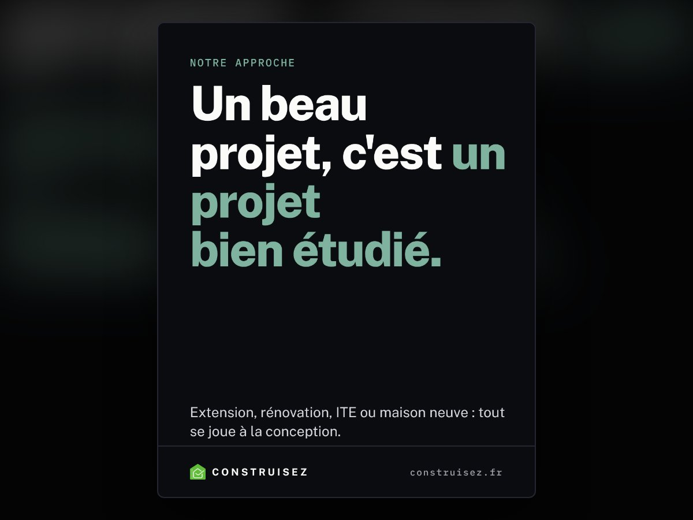<a class="open" href="https://raw.githubusercontent.com/antunesncls-sys/atelier-baratte-GIT/claude/beautiful-ritchie-9o5e4z/zernio/google-manuel/images/2026-11-25-google-27a-manifeste.jpg" target="_blank" rel="noopener">Ouvrir l'image en grand</a><figcaption>Puis appui long sur l'image : « Enregistrer » ou « Ajouter à Photos ».</figcaption></figure>
    <div class="txt">
      <div class="label-row"><span class="lab">Texte de l'actualité</span><button type="button" class="copy" data-target="t-2026-11-25">Copier le texte</button></div>
      <pre id="t-2026-11-25" class="text">Un beau projet, c’est avant tout un projet bien étudié. Extension, rénovation, isolation thermique par l’extérieur (ITE) ou construction de votre maison : un permis de construire accepté ne signifie pas que tous les aspects techniques ont été étudiés.

Les points à anticiper dès la conception : urbanisme et réglementation (PLU, permis, déclaration préalable, CERFA), gestion des eaux pluviales, risques naturels (PPRI, zones inondables), performance thermique (ITE, ponts thermiques, ventilation), RE2020, conception durable (matériaux, humidité, entretien) et suivi administratif (DOC et DAACT).

Notre objectif : un projet accepté par la mairie, et bien pensé pour les années à venir. Construisez intervient dans le 77, 94, 91, 95, 93, 92 et 78. Parlons-en avant de déposer votre dossier.</pre>
      <div class="label-row"><span class="lab">Bouton : En savoir plus</span><button type="button" class="copy" data-target="u-2026-11-25">Copier le lien</button></div>
      <code id="u-2026-11-25" class="url">https://www.construisez.fr/?utm_source=google&utm_medium=gbp&utm_campaign=posts</code>
    </div>
  </div>
</article>
<article class="post" id="p2026-11-26" data-id="2026-11-26">
  <header class="post-head">
    <div class="when"><span class="n">03</span><span class="day">jeudi 26 novembre</span><span class="time">dès 19:45</span></div>
    <label class="done"><input type="checkbox" id="done-2026-11-26"> Publié</label>
  </header>
  <h2>création d&#x27;une cave sous une maison existante</h2>
  <p class="city">📍 Saint-Maur-des-Fossés (94)</p>
  <div class="body">
    <figure>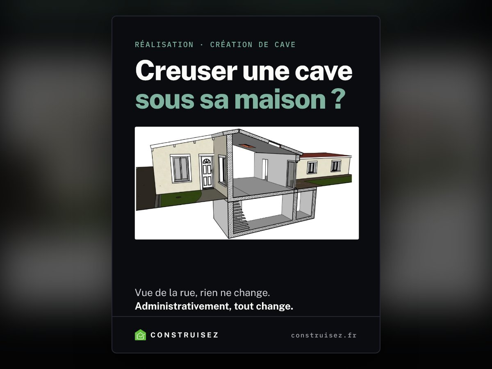<a class="open" href="https://raw.githubusercontent.com/antunesncls-sys/atelier-baratte-GIT/claude/beautiful-ritchie-9o5e4z/zernio/google-manuel/images/2026-11-26-google-10a-cave.jpg" target="_blank" rel="noopener">Ouvrir l'image en grand</a><figcaption>Puis appui long sur l'image : « Enregistrer » ou « Ajouter à Photos ».</figcaption></figure>
    <div class="txt">
      <div class="label-row"><span class="lab">Texte de l'actualité</span><button type="button" class="copy" data-target="t-2026-11-26">Copier le texte</button></div>
      <pre id="t-2026-11-26" class="text">Gagner de la surface sans toucher au jardin ni au toit : nous avons créé une cave sous une maison existante.

Cave de 2,18 m sous plafond, sous la pièce de vie, avec escalier intérieur. À savoir avant de creuser : au-delà de 1,80 m sous plafond, la cave compte dans la surface de plancher ; dès 5 m² créés sur une maison existante, il faut au minimum une déclaration préalable ; et creuser sous des murs existants demande une étude de structure.

Un projet de cave ou de sous-sol ? Devis sous 24 h.</pre>
      <div class="label-row"><span class="lab">Bouton : En savoir plus</span><button type="button" class="copy" data-target="u-2026-11-26">Copier le lien</button></div>
      <code id="u-2026-11-26" class="url">https://www.construisez.fr/?utm_source=google&utm_medium=gbp&utm_campaign=posts</code>
    </div>
  </div>
</article>
<article class="post" id="p2026-11-27" data-id="2026-11-27">
  <header class="post-head">
    <div class="when"><span class="n">04</span><span class="day">vendredi 27 novembre</span><span class="time">dès 19:45</span></div>
    <label class="done"><input type="checkbox" id="done-2026-11-27"> Publié</label>
  </header>
  <h2>Problème : véranda jamais déclarée, mais vous vendez</h2>
  <p class="city">📍 Saint-Maur-des-Fossés (94)</p>
  <div class="body">
    <figure>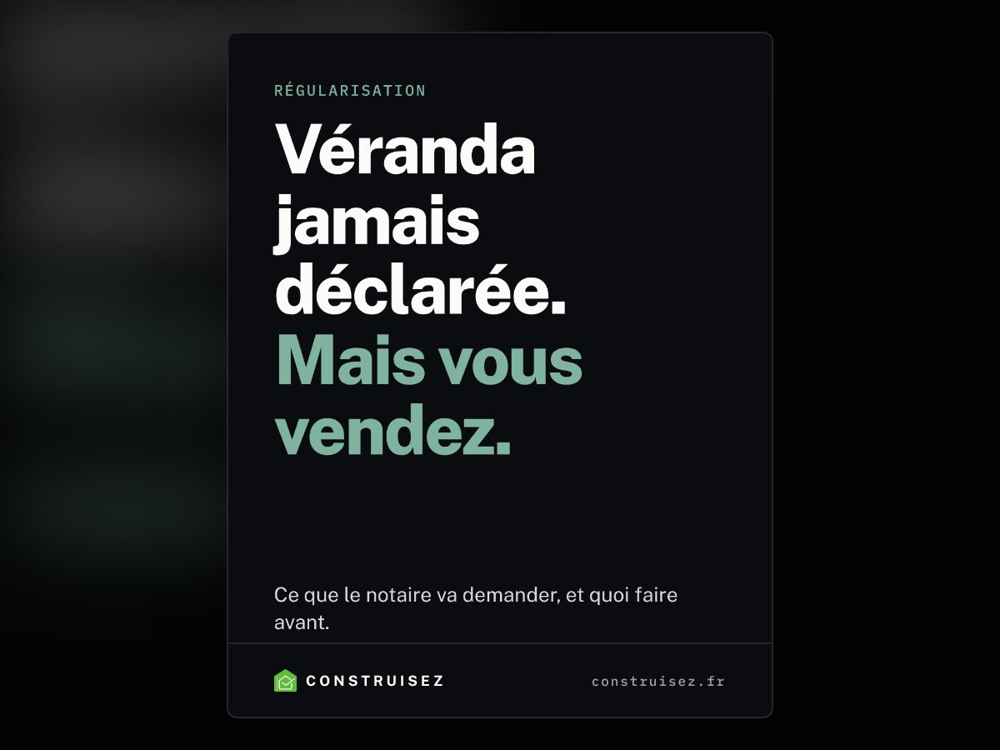<a class="open" href="https://raw.githubusercontent.com/antunesncls-sys/atelier-baratte-GIT/claude/beautiful-ritchie-9o5e4z/zernio/google-manuel/images/2026-11-27-google-30a-veranda.jpg" target="_blank" rel="noopener">Ouvrir l'image en grand</a><figcaption>Puis appui long sur l'image : « Enregistrer » ou « Ajouter à Photos ».</figcaption></figure>
    <div class="txt">
      <div class="label-row"><span class="lab">Texte de l'actualité</span><button type="button" class="copy" data-target="t-2026-11-27">Copier le texte</button></div>
      <pre id="t-2026-11-27" class="text">Une véranda, un abri ou une extension jamais déclarés ? Au moment de vendre, le notaire demande les autorisations d&#x27;urbanisme, et une construction non déclarée peut faire baisser le prix ou bloquer la vente.

La régularisation est possible dans de nombreux cas : elle est jugée selon les règles actuelles du PLU. Construisez vérifie d&#x27;abord si votre construction est régularisable, puis prépare le dossier. Devis sous 24 h.</pre>
      <div class="label-row"><span class="lab">Bouton : En savoir plus</span><button type="button" class="copy" data-target="u-2026-11-27">Copier le lien</button></div>
      <code id="u-2026-11-27" class="url">https://www.construisez.fr/?utm_source=google&utm_medium=gbp&utm_campaign=posts</code>
    </div>
  </div>
</article>
<article class="post" id="p2026-11-28" data-id="2026-11-28">
  <header class="post-head">
    <div class="when"><span class="n">05</span><span class="day">samedi 28 novembre</span><span class="time">dès 19:45</span></div>
    <label class="done"><input type="checkbox" id="done-2026-11-28"> Publié</label>
  </header>
  <h2>Certificat d&#x27;urbanisme : savoir si un terrain est constructible avant d&#x27;acheter</h2>
  <p class="city">📍 Saint-Maur-des-Fossés (94)</p>
  <div class="body">
    <figure>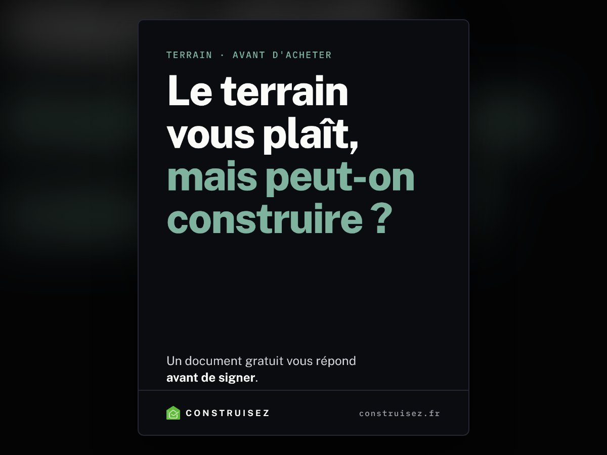<a class="open" href="https://raw.githubusercontent.com/antunesncls-sys/atelier-baratte-GIT/claude/beautiful-ritchie-9o5e4z/zernio/google-manuel/images/2026-11-28-google-32a-terrain.jpg" target="_blank" rel="noopener">Ouvrir l'image en grand</a><figcaption>Puis appui long sur l'image : « Enregistrer » ou « Ajouter à Photos ».</figcaption></figure>
    <div class="txt">
      <div class="label-row"><span class="lab">Texte de l'actualité</span><button type="button" class="copy" data-target="t-2026-11-28">Copier le texte</button></div>
      <pre id="t-2026-11-28" class="text">Un terrain vous plaît, mais peut-on y construire ? Avant de signer, demandez un certificat d&#x27;urbanisme. Le certificat d&#x27;information donne les règles du PLU, les servitudes et les taxes du terrain, en 1 mois. Le certificat opérationnel dit si votre projet est réalisable, en 2 mois.

Il est gratuit et fige les règles pendant 18 mois. Ce n&#x27;est pas une autorisation : il faudra ensuite déposer un permis.

Construisez prépare et dépose vos autorisations d&#x27;urbanisme partout en Île-de-France. Devis sous 24 h.</pre>
      <div class="label-row"><span class="lab">Bouton : En savoir plus</span><button type="button" class="copy" data-target="u-2026-11-28">Copier le lien</button></div>
      <code id="u-2026-11-28" class="url">https://www.construisez.fr/?utm_source=google&utm_medium=gbp&utm_campaign=posts</code>
    </div>
  </div>
</article>
<article class="post" id="p2026-11-29" data-id="2026-11-29">
  <header class="post-head">
    <div class="when"><span class="n">06</span><span class="day">dimanche 29 novembre</span><span class="time">dès 19:45</span></div>
    <label class="done"><input type="checkbox" id="done-2026-11-29"> Publié</label>
  </header>
  <h2>Taxe d&#x27;aménagement : ce qui est taxé après les travaux</h2>
  <p class="city">📍 Saint-Maur-des-Fossés (94)</p>
  <div class="body">
    <figure>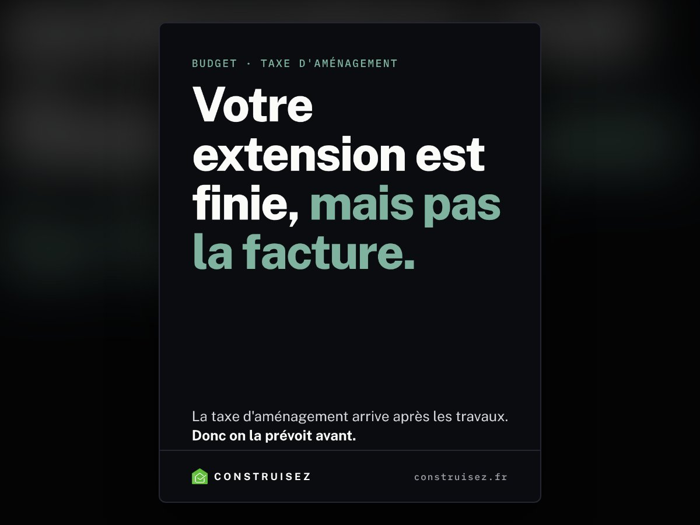<a class="open" href="https://raw.githubusercontent.com/antunesncls-sys/atelier-baratte-GIT/claude/beautiful-ritchie-9o5e4z/zernio/google-manuel/images/2026-11-29-google-33a-taxe.jpg" target="_blank" rel="noopener">Ouvrir l'image en grand</a><figcaption>Puis appui long sur l'image : « Enregistrer » ou « Ajouter à Photos ».</figcaption></figure>
    <div class="txt">
      <div class="label-row"><span class="lab">Texte de l'actualité</span><button type="button" class="copy" data-target="t-2026-11-29">Copier le texte</button></div>
      <pre id="t-2026-11-29" class="text">Votre extension est terminée, mais la facture ne l&#x27;est pas : la taxe d&#x27;aménagement arrive après les travaux. Elle porte sur les surfaces closes et couvertes de plus de 1,80 m sous plafond (extension, garage, véranda, abri), sur la piscine et sur les places de stationnement extérieures.

Les constructions de 5 m² ou moins sont exonérées, et la résidence principale profite d&#x27;un abattement de 50 % sur ses 100 premiers m². La déclaration se fait sur impots.gouv.fr dans les 90 jours après la fin des travaux.

Construisez prépare et dépose vos autorisations d&#x27;urbanisme partout en Île-de-France. Devis sous 24 h.</pre>
      <div class="label-row"><span class="lab">Bouton : En savoir plus</span><button type="button" class="copy" data-target="u-2026-11-29">Copier le lien</button></div>
      <code id="u-2026-11-29" class="url">https://www.construisez.fr/?utm_source=google&utm_medium=gbp&utm_campaign=posts</code>
    </div>
  </div>
</article>
<article class="post" id="p2026-11-30" data-id="2026-11-30">
  <header class="post-head">
    <div class="when"><span class="n">07</span><span class="day">lundi 30 novembre</span><span class="time">dès 19:45</span></div>
    <label class="done"><input type="checkbox" id="done-2026-11-30"> Publié</label>
  </header>
  <h2>Fin de travaux : la DOC et la DAACT</h2>
  <p class="city">📍 Saint-Maur-des-Fossés (94)</p>
  <div class="body">
    <figure>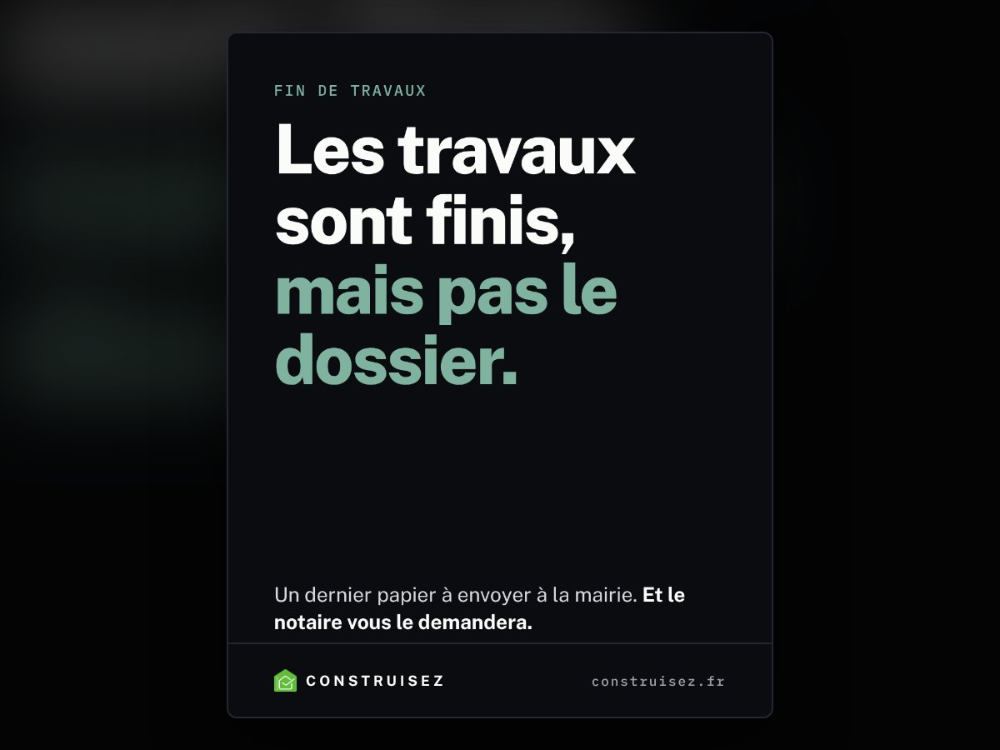<a class="open" href="https://raw.githubusercontent.com/antunesncls-sys/atelier-baratte-GIT/claude/beautiful-ritchie-9o5e4z/zernio/google-manuel/images/2026-11-30-google-34-fina.jpg" target="_blank" rel="noopener">Ouvrir l'image en grand</a><figcaption>Puis appui long sur l'image : « Enregistrer » ou « Ajouter à Photos ».</figcaption></figure>
    <div class="txt">
      <div class="label-row"><span class="lab">Texte de l'actualité</span><button type="button" class="copy" data-target="t-2026-11-30">Copier le texte</button></div>
      <pre id="t-2026-11-30" class="text">Les travaux sont finis, mais le dossier ne l&#x27;est pas. Pour un permis de construire, la déclaration d&#x27;ouverture de chantier (DOC) s&#x27;envoie au démarrage. À la fin, la déclaration attestant l&#x27;achèvement et la conformité des travaux (DAACT) s&#x27;envoie pour un permis comme pour une déclaration préalable.

La mairie a ensuite 3 mois pour contester la conformité, 5 mois dans certains cas, notamment en secteur protégé. Passé ce délai, vous pouvez demander une attestation de non-contestation : c&#x27;est elle qui rassure un acheteur le jour de la vente.

Construisez prépare et dépose vos autorisations d&#x27;urbanisme partout en Île-de-France. Devis sous 24 h.</pre>
      <div class="label-row"><span class="lab">Bouton : En savoir plus</span><button type="button" class="copy" data-target="u-2026-11-30">Copier le lien</button></div>
      <code id="u-2026-11-30" class="url">https://www.construisez.fr/?utm_source=google&utm_medium=gbp&utm_campaign=posts</code>
    </div>
  </div>
</article>
<article class="post" id="p2026-12-01" data-id="2026-12-01">
  <header class="post-head">
    <div class="when"><span class="n">08</span><span class="day">mardi 1 décembre</span><span class="time">dès 19:45</span></div>
    <label class="done"><input type="checkbox" id="done-2026-12-01"> Publié</label>
  </header>
  <h2>Quiz abri de jardin</h2>
  <p class="city">📍 Saint-Maur-des-Fossés (94)</p>
  <div class="body">
    <figure>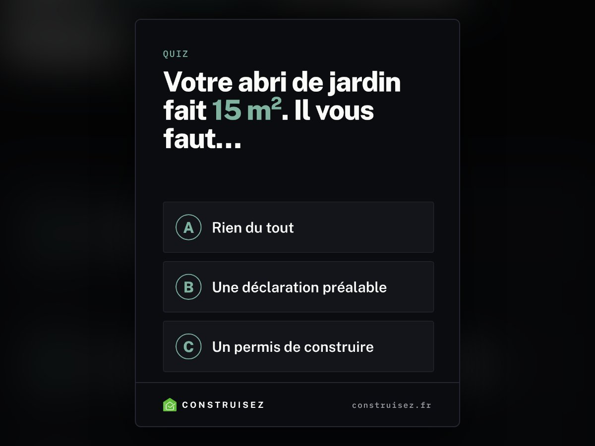<a class="open" href="https://raw.githubusercontent.com/antunesncls-sys/atelier-baratte-GIT/claude/beautiful-ritchie-9o5e4z/zernio/google-manuel/images/2026-12-01-google-04-quiz-abri.jpg" target="_blank" rel="noopener">Ouvrir l'image en grand</a><figcaption>Puis appui long sur l'image : « Enregistrer » ou « Ajouter à Photos ».</figcaption></figure>
    <div class="txt">
      <div class="label-row"><span class="lab">Texte de l'actualité</span><button type="button" class="copy" data-target="t-2026-12-01">Copier le texte</button></div>
      <pre id="t-2026-12-01" class="text">Quiz : votre abri de jardin fait 15 m². Quelle autorisation vous faut-il ?

Réponse : une déclaration préalable. Moins de 5 m² : aucune formalité (hors secteur protégé). De 5 à 20 m² : déclaration préalable. Plus de 20 m² : permis de construire. Au-delà de 5 m², l&#x27;abri entre aussi dans le calcul de la taxe d&#x27;aménagement.

Construisez gère vos déclarations préalables et permis de construire en Île-de-France. Devis sous 24 h.</pre>
      <div class="label-row"><span class="lab">Bouton : En savoir plus</span><button type="button" class="copy" data-target="u-2026-12-01">Copier le lien</button></div>
      <code id="u-2026-12-01" class="url">https://www.construisez.fr/?utm_source=google&utm_medium=gbp&utm_campaign=posts</code>
    </div>
  </div>
</article>
<article class="post" id="p2026-12-02" data-id="2026-12-02">
  <header class="post-head">
    <div class="when"><span class="n">09</span><span class="day">mercredi 2 décembre</span><span class="time">dès 19:45</span></div>
    <label class="done"><input type="checkbox" id="done-2026-12-02"> Publié</label>
  </header>
  <h2>Changement de destination : transformer un commerce ou un bureau en logement</h2>
  <p class="city">📍 Saint-Maur-des-Fossés (94)</p>
  <div class="body">
    <figure>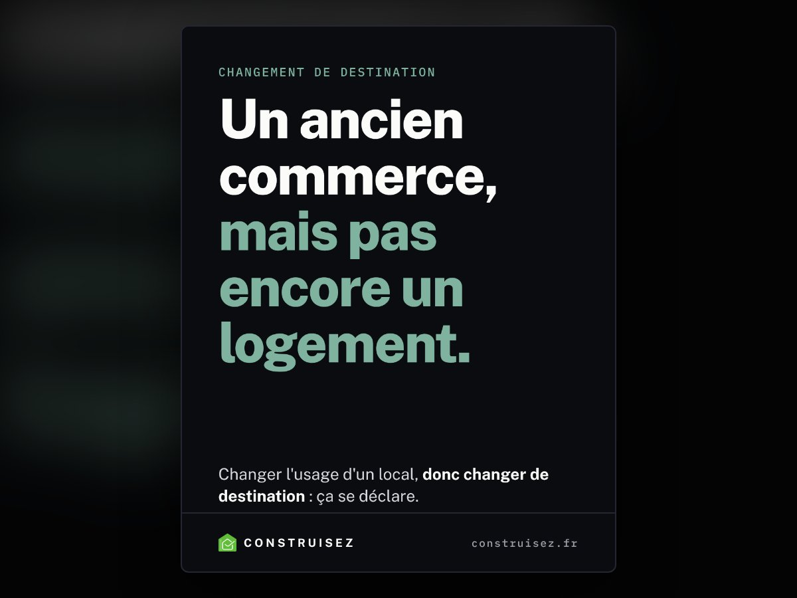<a class="open" href="https://raw.githubusercontent.com/antunesncls-sys/atelier-baratte-GIT/claude/beautiful-ritchie-9o5e4z/zernio/google-manuel/images/2026-12-02-google-35-destinationa.jpg" target="_blank" rel="noopener">Ouvrir l'image en grand</a><figcaption>Puis appui long sur l'image : « Enregistrer » ou « Ajouter à Photos ».</figcaption></figure>
    <div class="txt">
      <div class="label-row"><span class="lab">Texte de l'actualité</span><button type="button" class="copy" data-target="t-2026-12-02">Copier le texte</button></div>
      <pre id="t-2026-12-02" class="text">Transformer un commerce ou un bureau en logement, c&#x27;est changer sa destination, et ça se déclare. Sans toucher à la façade ni aux murs porteurs : déclaration préalable. Avec des travaux sur la façade ou la structure : permis de construire.

Le PLU peut aussi s&#x27;y opposer : certaines rues protègent leurs rez-de-chaussée commerciaux, et chaque logement créé peut exiger des places de stationnement. On vérifie avant d&#x27;acheter ou de lancer les travaux.

Construisez prépare et dépose vos autorisations d&#x27;urbanisme partout en Île-de-France. Devis sous 24 h.</pre>
      <div class="label-row"><span class="lab">Bouton : En savoir plus</span><button type="button" class="copy" data-target="u-2026-12-02">Copier le lien</button></div>
      <code id="u-2026-12-02" class="url">https://www.construisez.fr/?utm_source=google&utm_medium=gbp&utm_campaign=posts</code>
    </div>
  </div>
</article>
<article class="post" id="p2026-12-03" data-id="2026-12-03">
  <header class="post-head">
    <div class="when"><span class="n">10</span><span class="day">jeudi 3 décembre</span><span class="time">dès 19:45</span></div>
    <label class="done"><input type="checkbox" id="done-2026-12-03"> Publié</label>
  </header>
  <h2>devanture du restaurant Riz Djondjon</h2>
  <p class="city">📍 Saint-Maur-des-Fossés (94)</p>
  <div class="body">
    <figure>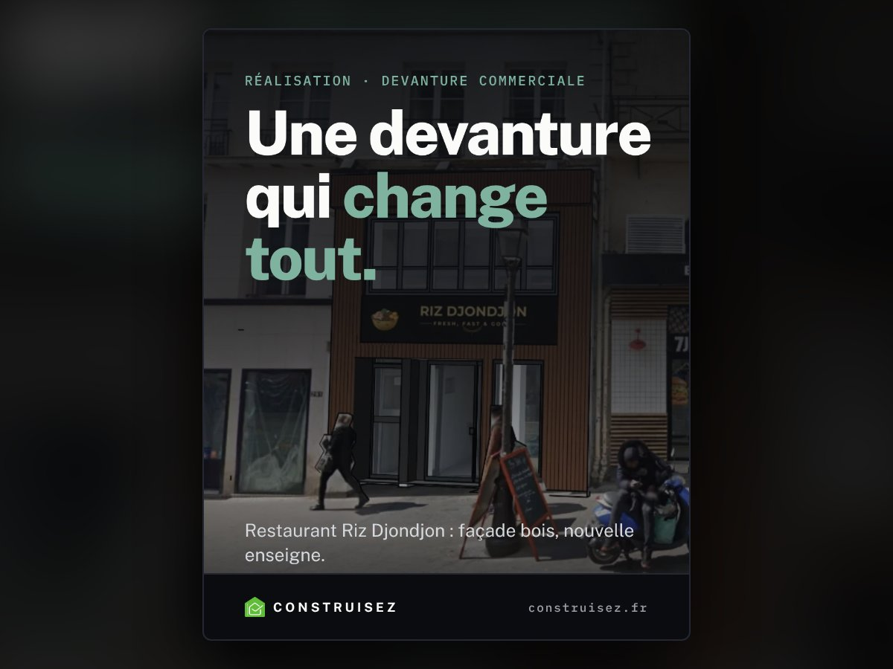<a class="open" href="https://raw.githubusercontent.com/antunesncls-sys/atelier-baratte-GIT/claude/beautiful-ritchie-9o5e4z/zernio/google-manuel/images/2026-12-03-google-09a-devanture.jpg" target="_blank" rel="noopener">Ouvrir l'image en grand</a><figcaption>Puis appui long sur l'image : « Enregistrer » ou « Ajouter à Photos ».</figcaption></figure>
    <div class="txt">
      <div class="label-row"><span class="lab">Texte de l'actualité</span><button type="button" class="copy" data-target="t-2026-12-03">Copier le texte</button></div>
      <pre id="t-2026-12-03" class="text">Une nouvelle devanture pour le restaurant Riz Djondjon.

Habillage bois vertical, enseigne noire et dorée lisible de loin, entrées de l&#x27;immeuble et du restaurant conservées. Modifier une devanture se déclare : la façade passe par une déclaration préalable, et l&#x27;enseigne demande souvent sa propre autorisation selon la commune.

Notre travail : relevé sur place, plans de façade existant et projet cotés, insertion dans la rue, dépôt et suivi. Vous ouvrez ou rénovez un commerce ? Devis sous 24 h.</pre>
      <div class="label-row"><span class="lab">Bouton : En savoir plus</span><button type="button" class="copy" data-target="u-2026-12-03">Copier le lien</button></div>
      <code id="u-2026-12-03" class="url">https://www.construisez.fr/?utm_source=google&utm_medium=gbp&utm_campaign=posts</code>
    </div>
  </div>
</article>
<article class="post" id="p2026-12-04" data-id="2026-12-04">
  <header class="post-head">
    <div class="when"><span class="n">11</span><span class="day">vendredi 4 décembre</span><span class="time">dès 19:45</span></div>
    <label class="done"><input type="checkbox" id="done-2026-12-04"> Publié</label>
  </header>
  <h2>Surélévation : les 3 vérifications avant de dessiner</h2>
  <p class="city">📍 Saint-Maur-des-Fossés (94)</p>
  <div class="body">
    <figure>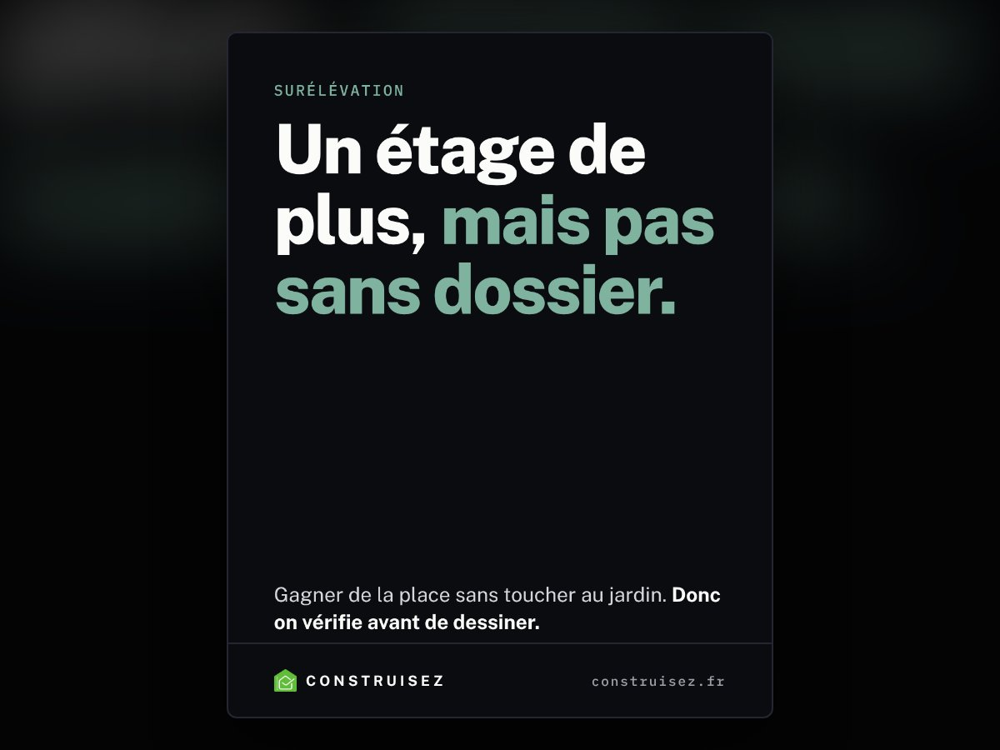<a class="open" href="https://raw.githubusercontent.com/antunesncls-sys/atelier-baratte-GIT/claude/beautiful-ritchie-9o5e4z/zernio/google-manuel/images/2026-12-04-google-36-surelevationa.jpg" target="_blank" rel="noopener">Ouvrir l'image en grand</a><figcaption>Puis appui long sur l'image : « Enregistrer » ou « Ajouter à Photos ».</figcaption></figure>
    <div class="txt">
      <div class="label-row"><span class="lab">Texte de l'actualité</span><button type="button" class="copy" data-target="t-2026-12-04">Copier le texte</button></div>
      <pre id="t-2026-12-04" class="text">Un étage de plus, mais pas sans dossier. Avant de dessiner une surélévation, trois vérifications : la hauteur autorisée par le PLU (hauteur maximale, gabarit, toiture), les vues sur les voisins créées par les nouvelles fenêtres, et la structure, car murs et fondations doivent pouvoir porter l&#x27;étage.

Jusqu&#x27;à 20 m² créés (40 m² en zone urbaine d&#x27;un PLU) : déclaration préalable. Au-delà : permis de construire, avec un architecte obligatoire si la maison dépasse 150 m² de surface de plancher.

Construisez prépare et dépose vos autorisations d&#x27;urbanisme partout en Île-de-France. Devis sous 24 h.</pre>
      <div class="label-row"><span class="lab">Bouton : En savoir plus</span><button type="button" class="copy" data-target="u-2026-12-04">Copier le lien</button></div>
      <code id="u-2026-12-04" class="url">https://www.construisez.fr/?utm_source=google&utm_medium=gbp&utm_campaign=posts</code>
    </div>
  </div>
</article>
<article class="post" id="p2026-12-05" data-id="2026-12-05">
  <header class="post-head">
    <div class="when"><span class="n">12</span><span class="day">samedi 5 décembre</span><span class="time">dès 19:45</span></div>
    <label class="done"><input type="checkbox" id="done-2026-12-05"> Publié</label>
  </header>
  <h2>Fenêtres et vues sur le voisin : les distances du Code civil</h2>
  <p class="city">📍 Saint-Maur-des-Fossés (94)</p>
  <div class="body">
    <figure>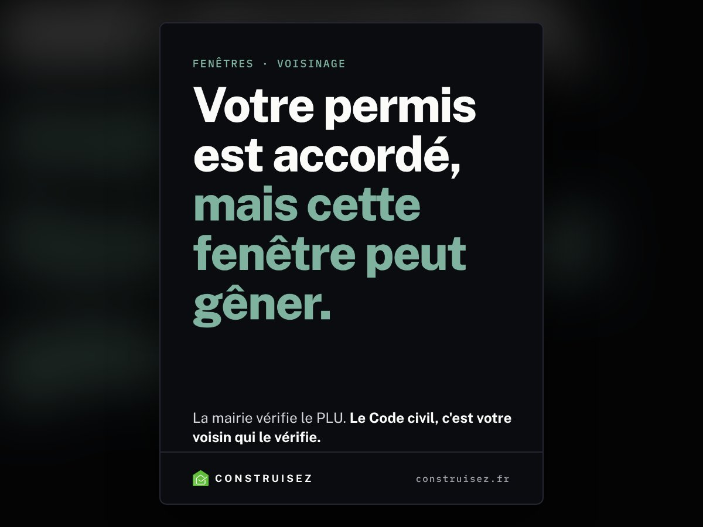<a class="open" href="https://raw.githubusercontent.com/antunesncls-sys/atelier-baratte-GIT/claude/beautiful-ritchie-9o5e4z/zernio/google-manuel/images/2026-12-05-google-37-vuesa.jpg" target="_blank" rel="noopener">Ouvrir l'image en grand</a><figcaption>Puis appui long sur l'image : « Enregistrer » ou « Ajouter à Photos ».</figcaption></figure>
    <div class="txt">
      <div class="label-row"><span class="lab">Texte de l'actualité</span><button type="button" class="copy" data-target="t-2026-12-05">Copier le texte</button></div>
      <pre id="t-2026-12-05" class="text">Votre permis est accordé, mais une fenêtre peut encore poser problème. Le Code civil impose 1,90 m entre une vue droite (fenêtre, balcon, terrasse face à la propriété voisine) et la limite, et 0,60 m pour une vue oblique. Plus près, seul un jour de souffrance est possible : un vitrage translucide et fixe, posé assez haut.

Un permis est délivré sous réserve du droit des tiers : un voisin peut demander au juge de fermer une vue trop proche. On vérifie ces distances dès la conception.

Construisez prépare et dépose vos autorisations d&#x27;urbanisme partout en Île-de-France. Devis sous 24 h.</pre>
      <div class="label-row"><span class="lab">Bouton : En savoir plus</span><button type="button" class="copy" data-target="u-2026-12-05">Copier le lien</button></div>
      <code id="u-2026-12-05" class="url">https://www.construisez.fr/?utm_source=google&utm_medium=gbp&utm_campaign=posts</code>
    </div>
  </div>
</article>
<article class="post" id="p2026-12-06" data-id="2026-12-06">
  <header class="post-head">
    <div class="when"><span class="n">13</span><span class="day">dimanche 6 décembre</span><span class="time">dès 19:45</span></div>
    <label class="done"><input type="checkbox" id="done-2026-12-06"> Publié</label>
  </header>
  <h2>Permis de démolir : quand il est obligatoire</h2>
  <p class="city">📍 Saint-Maur-des-Fossés (94)</p>
  <div class="body">
    <figure>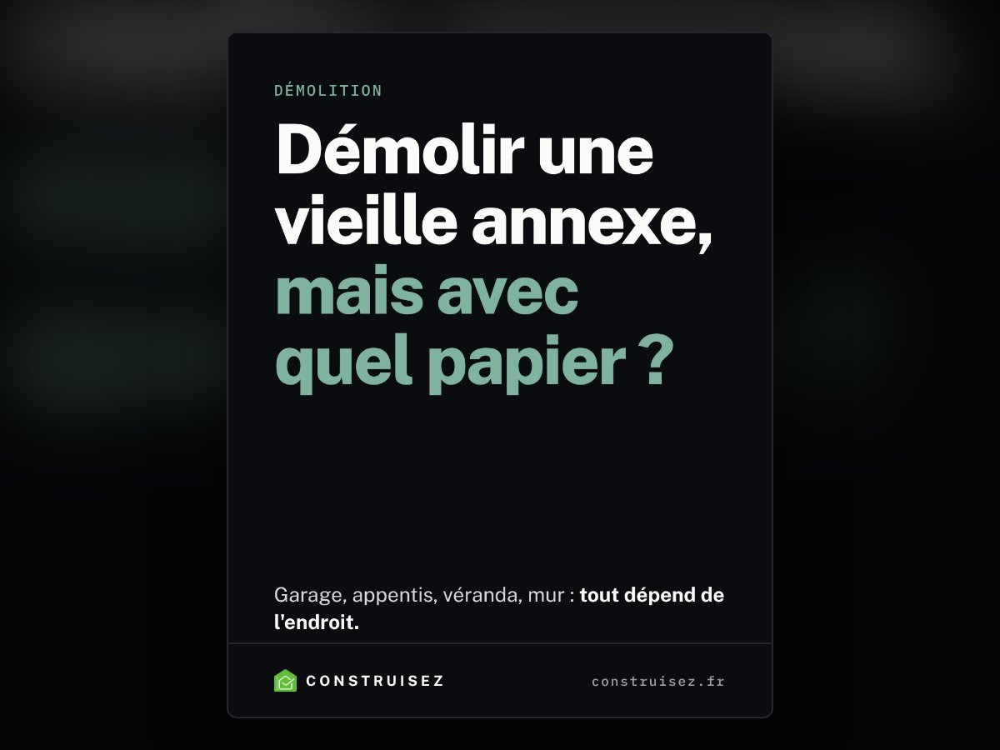<a class="open" href="https://raw.githubusercontent.com/antunesncls-sys/atelier-baratte-GIT/claude/beautiful-ritchie-9o5e4z/zernio/google-manuel/images/2026-12-06-google-38-demolira.jpg" target="_blank" rel="noopener">Ouvrir l'image en grand</a><figcaption>Puis appui long sur l'image : « Enregistrer » ou « Ajouter à Photos ».</figcaption></figure>
    <div class="txt">
      <div class="label-row"><span class="lab">Texte de l'actualité</span><button type="button" class="copy" data-target="t-2026-12-06">Copier le texte</button></div>
      <pre id="t-2026-12-06" class="text">Démolir une annexe, un garage, une véranda ou un mur : faut-il un permis de démolir ? Il est obligatoire en secteur protégé (abords d&#x27;un monument historique, site patrimonial remarquable, site classé ou inscrit), dans les communes qui l&#x27;ont institué, et pour les bâtiments protégés par le PLU. Même une démolition partielle est concernée.

Si vous démolissez pour reconstruire ou agrandir, la démolition peut être demandée dans le même permis de construire.

Construisez prépare et dépose vos autorisations d&#x27;urbanisme partout en Île-de-France. Devis sous 24 h.</pre>
      <div class="label-row"><span class="lab">Bouton : En savoir plus</span><button type="button" class="copy" data-target="u-2026-12-06">Copier le lien</button></div>
      <code id="u-2026-12-06" class="url">https://www.construisez.fr/?utm_source=google&utm_medium=gbp&utm_campaign=posts</code>
    </div>
  </div>
</article>
<article class="post" id="p2026-12-08" data-id="2026-12-08">
  <header class="post-head">
    <div class="when"><span class="n">14</span><span class="day">mardi 8 décembre</span><span class="time">dès 19:45</span></div>
    <label class="done"><input type="checkbox" id="done-2026-12-08"> Publié</label>
  </header>
  <h2>Le voisin et le recours</h2>
  <p class="city">📍 Saint-Maur-des-Fossés (94)</p>
  <div class="body">
    <figure>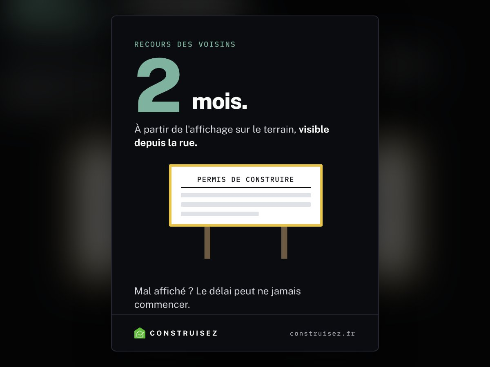<a class="open" href="https://raw.githubusercontent.com/antunesncls-sys/atelier-baratte-GIT/claude/beautiful-ritchie-9o5e4z/zernio/google-manuel/images/2026-12-08-google-05-recours-voisin.jpg" target="_blank" rel="noopener">Ouvrir l'image en grand</a><figcaption>Puis appui long sur l'image : « Enregistrer » ou « Ajouter à Photos ».</figcaption></figure>
    <div class="txt">
      <div class="label-row"><span class="lab">Texte de l'actualité</span><button type="button" class="copy" data-target="t-2026-12-08">Copier le texte</button></div>
      <pre id="t-2026-12-08" class="text">« Mon voisin a fait un recours contre mon permis. » Ce qu&#x27;il faut savoir.

Le délai de recours des tiers est de 2 mois, à partir de l&#x27;affichage du permis sur le terrain, visible depuis la rue. Mal affiché, le délai peut ne jamais commencer : faites constater l&#x27;affichage. Présenter le projet aux voisins avant le dépôt désamorce la plupart des conflits, et un projet bien conçu laisse peu de prise à un recours.

Construisez conçoit des projets solides face au PLU. Devis sous 24 h.</pre>
      <div class="label-row"><span class="lab">Bouton : En savoir plus</span><button type="button" class="copy" data-target="u-2026-12-08">Copier le lien</button></div>
      <code id="u-2026-12-08" class="url">https://www.construisez.fr/?utm_source=google&utm_medium=gbp&utm_campaign=posts</code>
    </div>
  </div>
</article>
<article class="post" id="p2026-12-10" data-id="2026-12-10">
  <header class="post-head">
    <div class="when"><span class="n">15</span><span class="day">jeudi 10 décembre</span><span class="time">dès 19:45</span></div>
    <label class="done"><input type="checkbox" id="done-2026-12-10"> Publié</label>
  </header>
  <h2>L&#x27;insertion graphique, la pièce qui fait accepter un projet</h2>
  <p class="city">📍 Saint-Maur-des-Fossés (94)</p>
  <div class="body">
    <figure>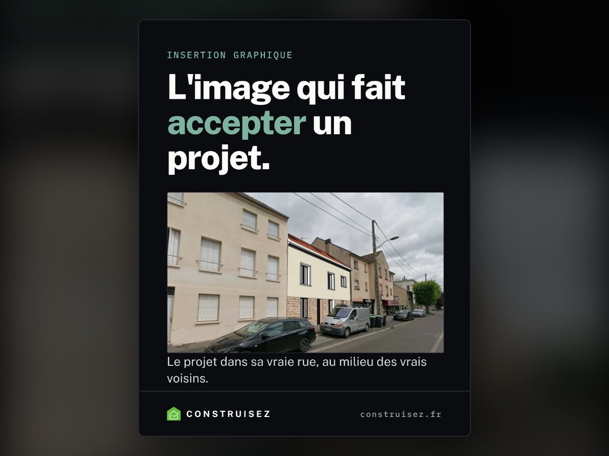<a class="open" href="https://raw.githubusercontent.com/antunesncls-sys/atelier-baratte-GIT/claude/beautiful-ritchie-9o5e4z/zernio/google-manuel/images/2026-12-10-google-11a-insertion.jpg" target="_blank" rel="noopener">Ouvrir l'image en grand</a><figcaption>Puis appui long sur l'image : « Enregistrer » ou « Ajouter à Photos ».</figcaption></figure>
    <div class="txt">
      <div class="label-row"><span class="lab">Texte de l'actualité</span><button type="button" class="copy" data-target="t-2026-12-10">Copier le texte</button></div>
      <pre id="t-2026-12-10" class="text">La pièce qui fait souvent accepter un permis : l&#x27;insertion graphique.

C&#x27;est la pièce PCMI6 du permis de construire (DP6 en déclaration préalable). Elle montre le projet dans sa vraie rue : une vraie photo prise depuis l&#x27;espace public, le projet à la bonne échelle avec ses matériaux, vu comme un passant le verra. Une insertion soignée répond à la question de l&#x27;instructeur : est-ce que ça s&#x27;intègre ?

Construisez réalise des insertions 3D réalistes. Devis sous 24 h.</pre>
      <div class="label-row"><span class="lab">Bouton : En savoir plus</span><button type="button" class="copy" data-target="u-2026-12-10">Copier le lien</button></div>
      <code id="u-2026-12-10" class="url">https://www.construisez.fr/?utm_source=google&utm_medium=gbp&utm_campaign=posts</code>
    </div>
  </div>
</article>
<article class="post" id="p2026-12-15" data-id="2026-12-15">
  <header class="post-head">
    <div class="when"><span class="n">16</span><span class="day">mardi 15 décembre</span><span class="time">dès 19:45</span></div>
    <label class="done"><input type="checkbox" id="done-2026-12-15"> Publié</label>
  </header>
  <h2>Checklist des pièces du permis maison</h2>
  <p class="city">📍 Saint-Maur-des-Fossés (94)</p>
  <div class="body">
    <figure>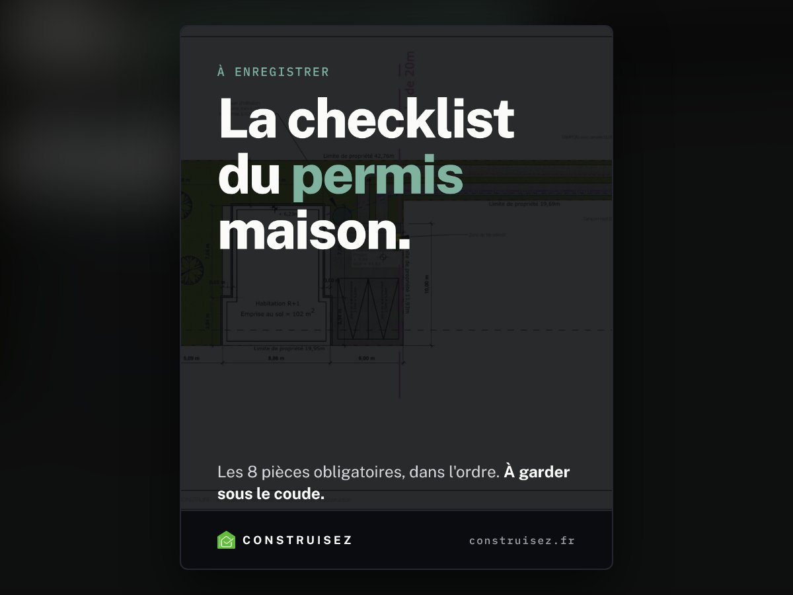<a class="open" href="https://raw.githubusercontent.com/antunesncls-sys/atelier-baratte-GIT/claude/beautiful-ritchie-9o5e4z/zernio/google-manuel/images/2026-12-15-google-06a-checklist.jpg" target="_blank" rel="noopener">Ouvrir l'image en grand</a><figcaption>Puis appui long sur l'image : « Enregistrer » ou « Ajouter à Photos ».</figcaption></figure>
    <div class="txt">
      <div class="label-row"><span class="lab">Texte de l'actualité</span><button type="button" class="copy" data-target="t-2026-12-15">Copier le texte</button></div>
      <pre id="t-2026-12-15" class="text">La checklist du permis de construire d&#x27;une maison individuelle.

PCMI1 plan de situation, PCMI2 plan de masse coté, PCMI3 plan en coupe, PCMI4 notice descriptive, PCMI5 façades et toitures, PCMI6 insertion graphique, PCMI7 et PCMI8 photos de l&#x27;environnement proche et lointain. Selon le projet : attestation RE2020, étude de sol en zone argileuse, pièces en secteur protégé.

Vous préférez qu&#x27;on s&#x27;en occupe ? Construisez monte votre dossier de A à Z. Devis sous 24 h.</pre>
      <div class="label-row"><span class="lab">Bouton : En savoir plus</span><button type="button" class="copy" data-target="u-2026-12-15">Copier le lien</button></div>
      <code id="u-2026-12-15" class="url">https://www.construisez.fr/?utm_source=google&utm_medium=gbp&utm_campaign=posts</code>
    </div>
  </div>
</article>
<article class="post" id="p2026-12-17" data-id="2026-12-17">
  <header class="post-head">
    <div class="when"><span class="n">17</span><span class="day">jeudi 17 décembre</span><span class="time">dès 19:45</span></div>
    <label class="done"><input type="checkbox" id="done-2026-12-17"> Publié</label>
  </header>
  <h2>Coulisses : le permis accordé d’une maison neuve à Lisses (91)</h2>
  <p class="city">📍 Lisses (91)</p>
  <div class="body">
    <figure>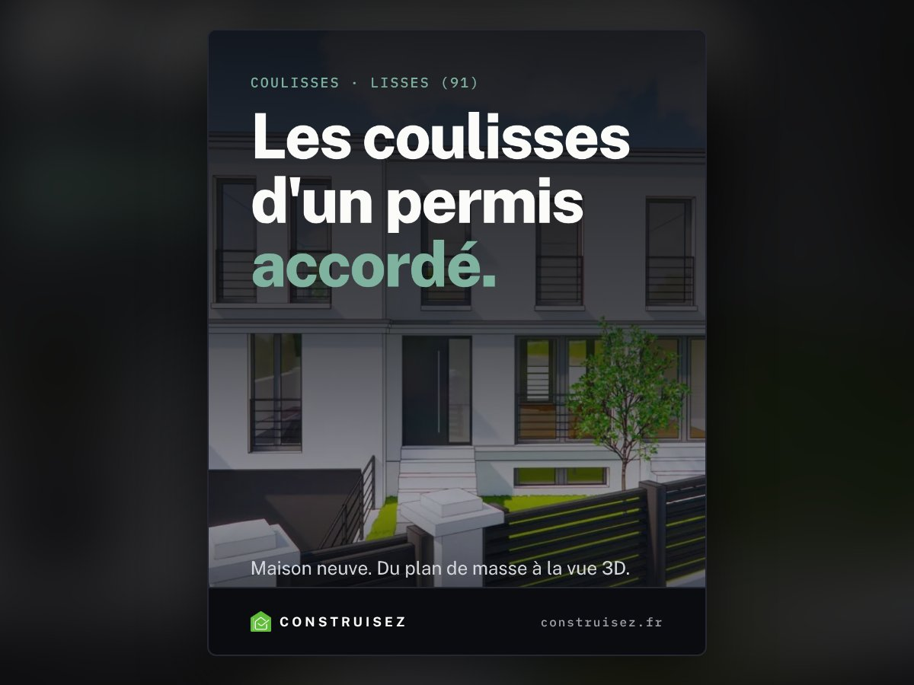<a class="open" href="https://raw.githubusercontent.com/antunesncls-sys/atelier-baratte-GIT/claude/beautiful-ritchie-9o5e4z/zernio/google-manuel/images/2026-12-17-google-07a-coulisses-lisses.jpg" target="_blank" rel="noopener">Ouvrir l'image en grand</a><figcaption>Puis appui long sur l'image : « Enregistrer » ou « Ajouter à Photos ».</figcaption></figure>
    <div class="txt">
      <div class="label-row"><span class="lab">Texte de l'actualité</span><button type="button" class="copy" data-target="t-2026-12-17">Copier le texte</button></div>
      <pre id="t-2026-12-17" class="text">Les coulisses d&#x27;un permis accordé : maison neuve à Lisses (91).

D&#x27;abord le plan de masse coté : emprise, distances aux limites, accès, réseaux, chaque cote conforme au PLU. Puis l&#x27;insertion 3D : le client voit sa maison avant le dépôt, la mairie comprend comment elle s&#x27;intègre dans la rue. Résultat : permis accordé.

Notre méthode : on vérifie avant de dessiner, on dépose un dossier propre, on suit l&#x27;instruction. Un terrain ou un projet de maison ? Devis sous 24 h.</pre>
      <div class="label-row"><span class="lab">Bouton : En savoir plus</span><button type="button" class="copy" data-target="u-2026-12-17">Copier le lien</button></div>
      <code id="u-2026-12-17" class="url">https://www.construisez.fr/?utm_source=google&utm_medium=gbp&utm_campaign=posts</code>
    </div>
  </div>
</article>
<article class="post" id="p2026-12-22" data-id="2026-12-22">
  <header class="post-head">
    <div class="when"><span class="n">18</span><span class="day">mardi 22 décembre</span><span class="time">dès 19:45</span></div>
    <label class="done"><input type="checkbox" id="done-2026-12-22"> Publié</label>
  </header>
  <h2>Validité du permis</h2>
  <p class="city">📍 Saint-Maur-des-Fossés (94)</p>
  <div class="body">
    <figure>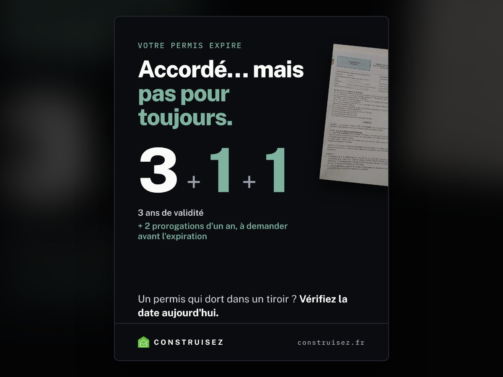<a class="open" href="https://raw.githubusercontent.com/antunesncls-sys/atelier-baratte-GIT/claude/beautiful-ritchie-9o5e4z/zernio/google-manuel/images/2026-12-22-google-08-validite.jpg" target="_blank" rel="noopener">Ouvrir l'image en grand</a><figcaption>Puis appui long sur l'image : « Enregistrer » ou « Ajouter à Photos ».</figcaption></figure>
    <div class="txt">
      <div class="label-row"><span class="lab">Texte de l'actualité</span><button type="button" class="copy" data-target="t-2026-12-22">Copier le texte</button></div>
      <pre id="t-2026-12-22" class="text">Votre permis de construire a une date d&#x27;expiration.

Il est valable 3 ans. Si les travaux n&#x27;ont pas commencé dans ce délai, ou s&#x27;ils sont interrompus plus d&#x27;un an, il devient caduc. Vous pouvez demander une prorogation d&#x27;un an, deux fois, à condition de la demander avant l&#x27;expiration et que les règles d&#x27;urbanisme n&#x27;aient pas changé. Besoin d&#x27;ajuster le projet avant de démarrer ? Un permis modificatif est souvent possible.

Construisez vous accompagne. Devis sous 24 h.</pre>
      <div class="label-row"><span class="lab">Bouton : En savoir plus</span><button type="button" class="copy" data-target="u-2026-12-22">Copier le lien</button></div>
      <code id="u-2026-12-22" class="url">https://www.construisez.fr/?utm_source=google&utm_medium=gbp&utm_campaign=posts</code>
    </div>
  </div>
</article>
</main>

<script>
(function () {
  const store = {
    get(k) { try { return localStorage.getItem(k); } catch (e) { return null; } },
    set(k, v) { try { v === null ? localStorage.removeItem(k) : localStorage.setItem(k, v); } catch (e) {} }
  };
  const posts = [...document.querySelectorAll('.post')];
  function refresh() {
    const done = posts.filter(p => p.classList.contains('is-done')).length;
    document.getElementById('progress').textContent = done + ' / ' + posts.length + ' posts publiés';
  }
  posts.forEach(p => {
    const box = p.querySelector('.done input');
    box.checked = store.get('done-' + p.dataset.id) === '1';
    p.classList.toggle('is-done', box.checked);
    box.addEventListener('change', () => {
      p.classList.toggle('is-done', box.checked);
      store.set('done-' + p.dataset.id, box.checked ? '1' : null);
      refresh();
    });
  });
  refresh();
  function selectText(el) {
    const r = document.createRange(); r.selectNodeContents(el);
    const s = window.getSelection(); s.removeAllRanges(); s.addRange(r);
  }
  document.querySelectorAll('.copy').forEach(btn => {
    const label = btn.textContent;
    btn.addEventListener('click', () => {
      const el = document.getElementById(btn.dataset.target);
      const done = (msg) => { btn.textContent = msg; btn.classList.add('ok'); setTimeout(() => { btn.textContent = label; btn.classList.remove('ok'); }, 1800); };
      const fallback = () => { selectText(el); done('Sélectionné : copiez'); };
      if (navigator.clipboard && navigator.clipboard.writeText) {
        navigator.clipboard.writeText(el.textContent).then(() => done('Copié'), fallback);
      } else fallback();
    });
  });
  const target = location.hash && document.querySelector(location.hash);
  if (target) target.scrollIntoView();
})();
</script>
